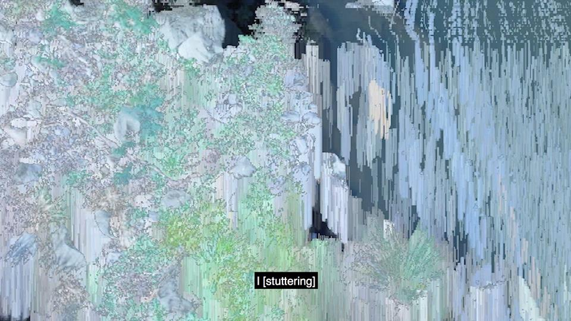

13.2.18
Interface @ Kings Artist Run

Interface is a group exhibition exploring technology and its effect on human communication. I'm showing two works:
The Bridge and
Delayed Communication. Interface is running Feb 9th - March 4th. Come down to Kings and check it out!
Facebook event
here.
King's ARI page
here.